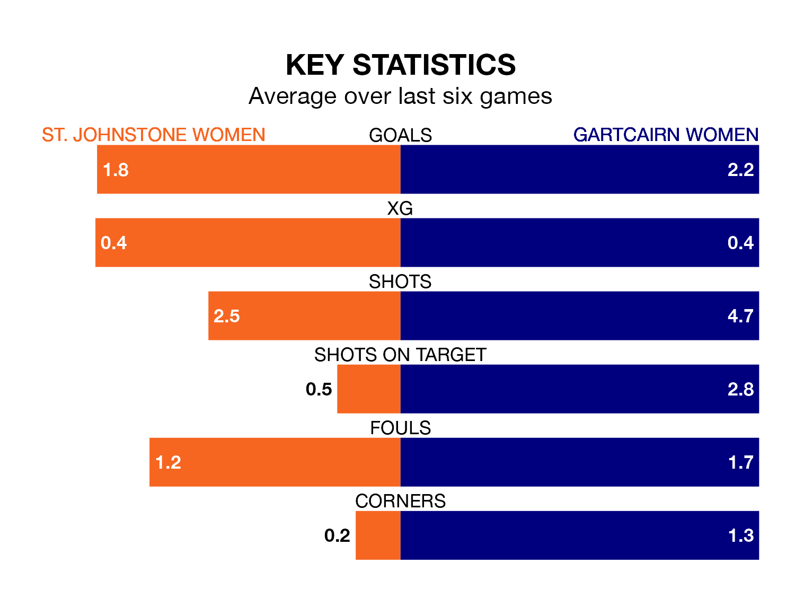

Struggling St. Johnstone Women face Gartcairn Women at the Riverside Stadium on Sunday looking to build on a win in their last league outing.
After securing all three points with a 1-0 victory over Stirling University Women on March 31, St. Johnstone sit fifth in SWPL 2.
They travel to play a Gartcairn side sixth in the standings, who lost in their last match, 2-0 against Queen's Park Women.
With 32 goals in 22 games so far this season, Gartcairn are the league's third-lowest scorers with 1.5 goals per game. And they are conceding more than average, letting in 61 goals at a rate of 2.8 per game.
St. Johnstone, meanwhile, are above average scorers, with 2.0 goals per game, compared to a league average of 1.8. They have also conceded 2.0 goals per game.
In the last 10 years, St. Johnstone and Gartcairn have played each other on seven occasions. St. Johnstone won five of them and Gartcairn two.
On average, St. Johnstone scored 2.7 goals and Gartcairn 1.9 in those matches.
Their last meeting was on February 11, when St. Johnstone won 3-2 away.
The home side are in mixed form in SWPL 2, with three wins and a draw from their last six games.
With four wins and two losses over that period, the visitors' form is slightly better – they have taken 12 points from 18, compared to St. Johnstone's 10.
Updated: 14:47 (UTC), 09/04/24